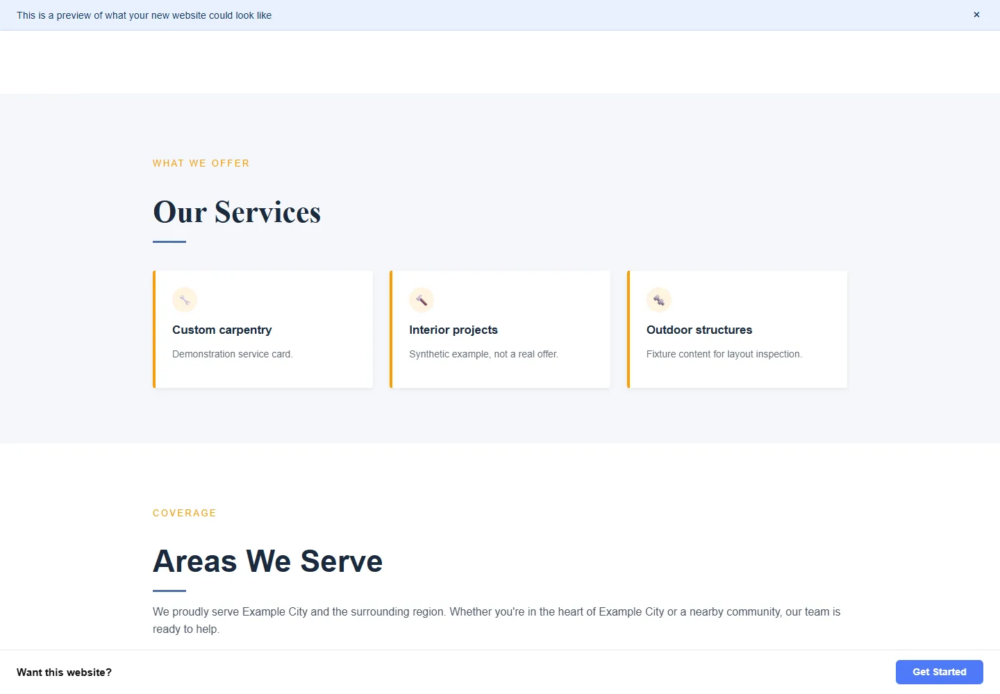

ZommieBiz
Discover businesses, assess existing websites and generate website previews.

The idea
ZommieBiz explores a different way to demonstrate web design: instead of telling a business owner what a better site might look like, generate a concrete industry-specific preview. The original plan connected business discovery, assessment of an existing site, structured content generation, preview hosting and a follow-up workflow. As a learning project, it reaches across browser-facing design and background systems: Next.js applications, shared database models, scoring, worker queues, template composition, asynchronous events and unsubscribe handling. The interesting personal-site story is the machinery that turns structured information into a preview, not an unsupported claim that the commercial business launched or converted customers.

How it works
An operator discovers candidate businesses and inspects signals about their existing websites. The score prioritizes review; it is not an objective measure of a business's quality.
A generation worker prepares structured content and chooses an industry template. A preview record supplies the business fields and template ID.
The preview app looks up a slug, checks expiry and selects the appropriate React template for a restaurant, salon, contractor, dentist or retail business.
A business owner would browse the preview and use its contact CTA. For this portfolio run, only the actual contractor renderer is mounted with synthetic data; submission and tracking are disabled, and no outreach is sent.
Inside the build
A weighted score that can be inspected
The TypeScript score engine combines mobile and desktop performance, viewport metadata, builder detection, older library signals and HTML complexity. It reverses performance scores so worse performance produces a larger remake score, and reserves a special score for a missing website. This is a practical example of separating raw observations from a deterministic prioritization rule, with visible weights instead of an unexplained AI judgment.
Templates as structured presentation code
The preview route resolves a vertical/template ID, parses stored generated content and passes a typed business object into React components. Shared sections cover hero, services, gallery, hours/location and contact. Vertical configuration controls palettes, display formats and fallback imagery; contractor and restaurant previews use different presentation structures. The local capture runs these actual components, while keeping the database loader and server actions out of the capture harness.
Background work and event boundaries
The repository contains discovery, scoring, generation and outreach workers plus Prisma models. Outreach work includes idempotency, suppression checks, delayed sequencing, webhook signature verification and an unsubscribe surface. The February verification report marks static requirements complete but explicitly lists real mail delivery, unsubscribe interaction and webhook delivery as human checks. Those distinctions matter: code presence is not evidence of a fully exercised external service.
What I learned
Design a system that can explain its own decisions
A ranking score becomes easier to debug when inputs and weights are explicit. The same principle applies to stored content and template selection. This project supports a learning narrative about deterministic rules around generative systems, rather than treating generation as an opaque end-to-end solution.
A convincing preview needs truthful placeholder behavior
The recorded design context calls for example testimonials to be labeled, missing information to appear as placeholders and generated previews to remain noindexed. The actual capture still contains a stock-photo placeholder, which is a useful sign of the preserved state. It should not be replaced with invented client proof or presented as a finished customer site.
External workflows add responsibilities beyond rendering
Queues, retries, idempotency, suppression and signed webhook events are learning topics visible in this source. Rendering a nice preview is one subsystem; sending messages and respecting state transitions is another. The portfolio run deliberately exercises only the safe local presentation slice and does not turn a demo into actual outreach.